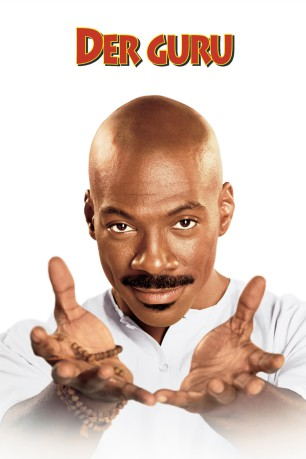
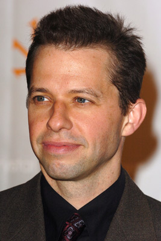
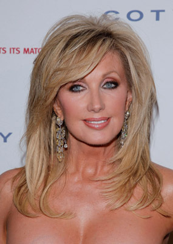
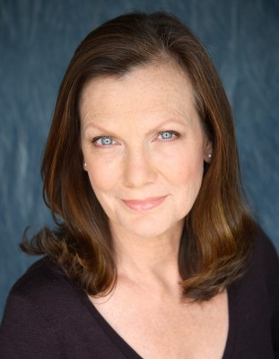
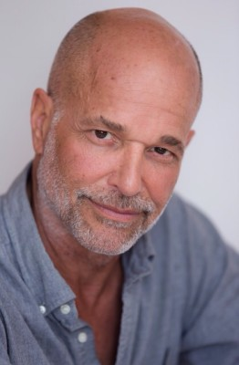
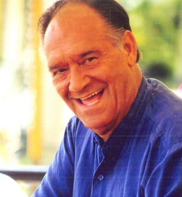

#6935 Der Guru
Alternativ: Holy Man
 
 IMDB-Wertung: 4.9 / 10
IMDB-Wertung: 4.9 / 10  Metascore: 0
Metascore: 0 
Wir befinden uns im Amerika unserer Tage: Ein Teleshopping-Sender verkauft Dinge, die der Mensch nicht braucht. Allerdings mit abnehmendem Erfolg. Hinzu kommt, daß ein der Guru G plötzlich den Fernsehzuschauern zu verkünden beginnt: Das braucht ihr nicht. Doch das stört die Zuschauer nicht. Im Gegenteil: Sie beginnen wie wild, die nutzlosen Konsumartikel zu ordern. Als die Fernsehmacher dies entdecken, kommt ihnen eine wahnwitzige Idee. Sie wollen sich den Guru zunutze machen und geben ihm eine eigene Sendung, den "G-Spot". Programmchef Ricky, der gerade noch vor der Kündigung stand, wird von seinem Boss McBainbridge damit beauftragt Guru G unter Vertrag zu nehmen. Die Sendung schlägt ein wie eine Bombe, G bringt alles an den Mann. Er schafft sogar das zu verkaufen, was eigentlich niemand haben will.
Jahr: 1998
Dauer: 113 Minuten
FSK: 0
Land: USA Studio: Buena Vista PicturesTonspuren: DD5.1 - ,
Untertitel: Englisch,
Auflösung: 1080p (1920x816) Größe: 8437 MB
Genre: Drama, Komödie
Regisseur: Stephen Herek
Drehbuch: Tom Schulman
Soundtrack:
Darsteller:
 Eddie Murphy als 'G'
Eddie Murphy als 'G' Jeff Goldblum als Ricky
Jeff Goldblum als Ricky Kelly Preston als Kate
Kelly Preston als Kate Robert Loggia als McBainbridge
Robert Loggia als McBainbridge-  Jon Cryer als Barry
- Eric McCormack als Scott Hawks
 Sam Kitchin als Director
Sam Kitchin als Director Robert Small als Assistant Director
Robert Small als Assistant Director Marc Macaulay als Cameraman - Brutus
Marc Macaulay als Cameraman - Brutus Edie McClurg als Laundry Lady #2
Edie McClurg als Laundry Lady #2-  Morgan Fairchild als Morgan Fairchild
 Betty White als Betty White
Betty White als Betty White- Florence Henderson als Florence Henderson
- James Brown als Himself
- Soupy Sales als Himself
- Dan Marino als Himself
- Willard Scott als Himself
- Barbara Barron als Sunbather #1
- Madeline Vail als Sunbather #2
 Tim Powell als Doctor Simon
Tim Powell als Doctor Simon- Whitney Dupree als Laurie
 Jennifer Taylor als Hot Tub Girl
Jennifer Taylor als Hot Tub Girl Dan Fitzgerald als Priest
Dan Fitzgerald als Priest Mike Benitez als Bullet Proof Vest Man
Mike Benitez als Bullet Proof Vest Man- Adriana Cataño als TV Hostess #1
- Kim Alexis als Keratin Girls - Amber
- Veronica Webb als Keratin Girls - Diandre
 Lee Bryant als Money 'Meg'
Lee Bryant als Money 'Meg' Brett Rice als Detective #1
Brett Rice als Detective #1-  Nancy Duerr als Reporter #1
- Laurie Wallace als Facial Mist Girl
- Willie Gault als Nordic Track Guy
-  Charles Haugk als Party Animal
- Toy Van Lierop als 'G' Makeup Artist
 Antoni Corone als Chain Saw Host
Antoni Corone als Chain Saw Host- Pati Lauren als Sports Car Driver
 Patrick Bauchau als Guy at the party who is hypnotised , uncredited
Patrick Bauchau als Guy at the party who is hypnotised , uncredited- Tucker Brown als News Editor , uncredited
 Liz Celeste als Receptionist , uncredited
Liz Celeste als Receptionist , uncredited- Sarahi Diaz als Hair Model , uncredited
- Edge als T.V. Producer , uncredited
- Ru Flynn als Southern Girl , uncredited
- Deborah Smith Ford als T.V. Station Personnel , uncredited
- Patrick H. Fox als FBI Agent , uncredited
- Gloria Laino als Makeup Artist , uncredited
 Eugene Levy als Guy on Background T.V. , uncredited
Eugene Levy als Guy on Background T.V. , uncredited- Rick Michaels als News Photographer , uncredited
- Sherrie Peterson als Restaurant Patron , uncredited
-  Al Quinn als Tourist , uncredited
 Joanna Theobalds als Reporter , uncredited
Joanna Theobalds als Reporter , uncredited
Datei: X:\1998\Guru, Der (1998, FSK0, 1920x816).mkv seit 08.09.2017
Festplatte: HD 1996-2002
 Es gibt insgesamt 86 Filme in der Gruppe '1998'
Es gibt insgesamt 86 Filme in der Gruppe '1998'